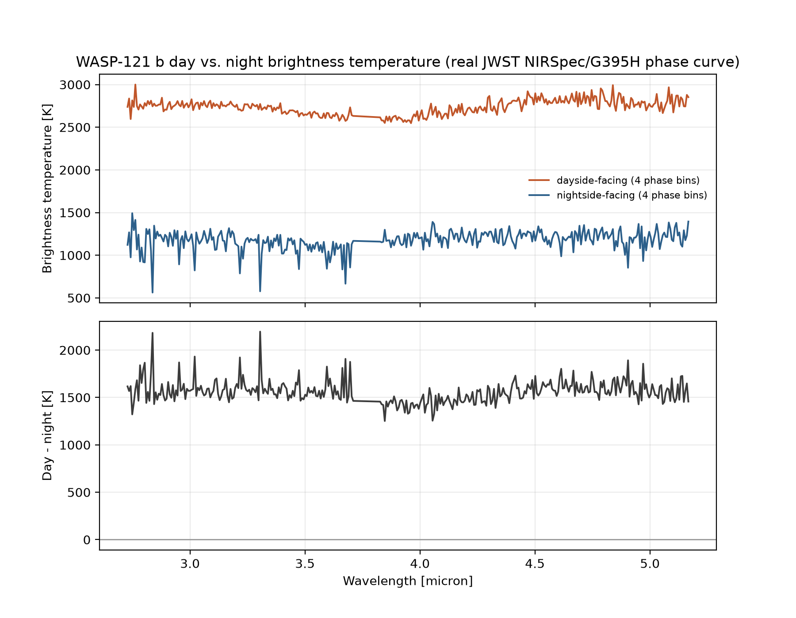

Exoplanet Atmosphere Report · JWST NIRSpec/G395H Phase Curve
An ultra-hot Jupiter so close to its star that its dayside glows hot enough to vaporize rock and metal, with a nightside measured well over 1000 K cooler. This page extracts that day-night divide from a JWST phase-resolved spectroscopy dataset, propagating each point's own posterior uncertainty rather than reporting a bare difference of averages.
AI-generated artist's concept of WASP-121 b — not a real photograph. All data and figures in this report come from actual JWST NIRSpec/G395H phase-curve observations (see below).
Queried live from the NASA Exoplanet Archive TAP service (pscomppars).
| Radius | 19.53 Earth radii (~1.74 Jupiter radii) |
|---|---|
| Mass | 371.9 Earth masses (~1.17 Jupiter masses) |
| Orbital period | 1.27 days — one of the shortest known for a giant planet |
| Semi-major axis | 0.0257 AU |
| Equilibrium temperature | 2409 K |
| Host star | WASP-121, F-type dwarf, Teff = 6628 K, 1.46 Rsun, 1.33 Msun |
| Distance | 269.9 parsecs (~880 light-years) |
| Discovery | 2016, transit photometry (WASP survey) |
At 2409 K equilibrium temperature and orbiting so close its shape is measurably tidally distorted, WASP-121 b sits at the extreme end of hot-Jupiter irradiation. Earlier HST work (Evans et al. 2017, 2018) found evidence for a stratospheric temperature inversion and metal oxide absorption (vanadium oxide) on its dayside — the atmospheric equivalent of Earth's ozone layer, but from a completely different chemistry driven by extreme heat rather than UV-absorbing ozone.
More recent JWST phase-curve spectroscopy (the data behind this report) tracks how the planet's emitted spectrum changes continuously as different hemispheres rotate into view across a full orbit, directly measuring how efficiently (or poorly) the atmosphere moves heat from the permanently irradiated dayside to the nightside.
The figure compares the brightness-temperature spectrum from phase bins closest to secondary eclipse (dayside hemisphere facing the observer) against phase bins closest to primary transit (nightside hemisphere facing the observer) — no atmospheric model is fit here, this is a direct comparison of the observed data at different orbital phases. Each point in the released dataset carries its own asymmetric posterior uncertainty; this page averages those uncertainties into a single sigma per point and combines phase bins with an inverse-variance weighted mean, so the day-night contrast comes with an actual error bar instead of being a difference of two plain averages.

scripts/analyze_spectrum.py.A day-night contrast of roughly 1490 K across this bandpass — this atmosphere redistributes heat far less efficiently than typical hot Jupiters, consistent with a dayside hot enough for silicate and metal vapor to condense out on the nightside as the gas cools while rotating away from the star. One caveat that matters here: brightness temperature is inherently wavelength-dependent, since different channels probe different opacities and pressure levels, so the ± 3-4 K on the numbers above describes only the statistical precision of averaging monochromatic values across this bandpass — it isn't a physical bolometric hemisphere temperature. The paper's own per-detector nightside values already show this directly: 926 ± 12 K on one detector (2.70-3.72 μm) versus 1122 ± 10 K on the other (3.82-5.15 μm), a real ~200 K difference between two broad bands alone. A separate JWST/NIRISS phase-curve analysis, which explicitly models the fraction of the spectrum this bandpass doesn't cover, derives proper bolometric effective temperatures of Tday = 2717 ± 17 K and Tnight = 1562 ± 19 K — the number to use for an actual energy-budget calculation, not this page's wavelength average.
System parameters come from the NASA Exoplanet Archive TAP service. The phase-resolved emission spectrum is reduced JWST NIRSpec/G395H data released publicly on Zenodo (record 10.5281/zenodo.20651891). See data/ for the wavelength grid, phase grid, and brightness-temperature files (values plus asymmetric upper/lower posterior uncertainties) exactly as downloaded, and scripts/analyze_spectrum.py for the phase-averaging analysis (python scripts/analyze_spectrum.py to rerun it). One posterior point in the released data has zero reported uncertainty, almost certainly a fitting artifact rather than an infinitely precise measurement; the script assigns it zero weight instead of letting it dominate the average.